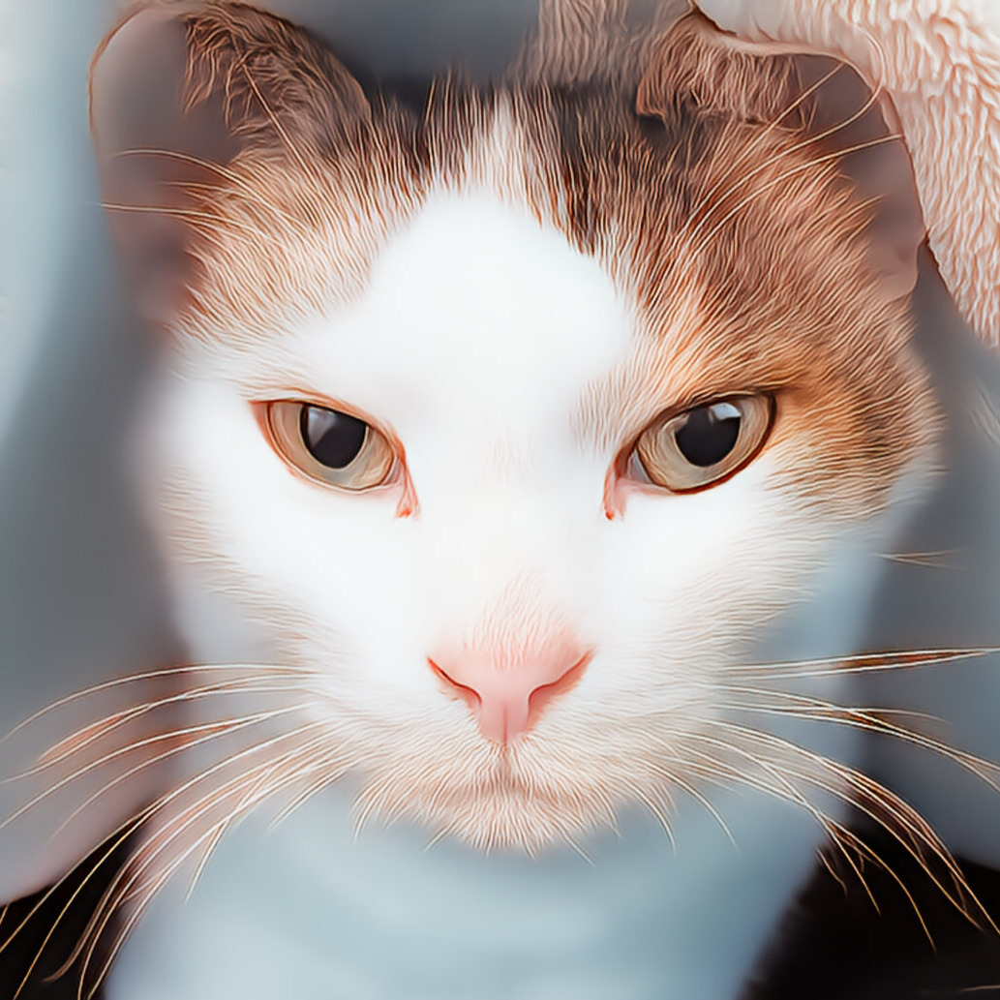
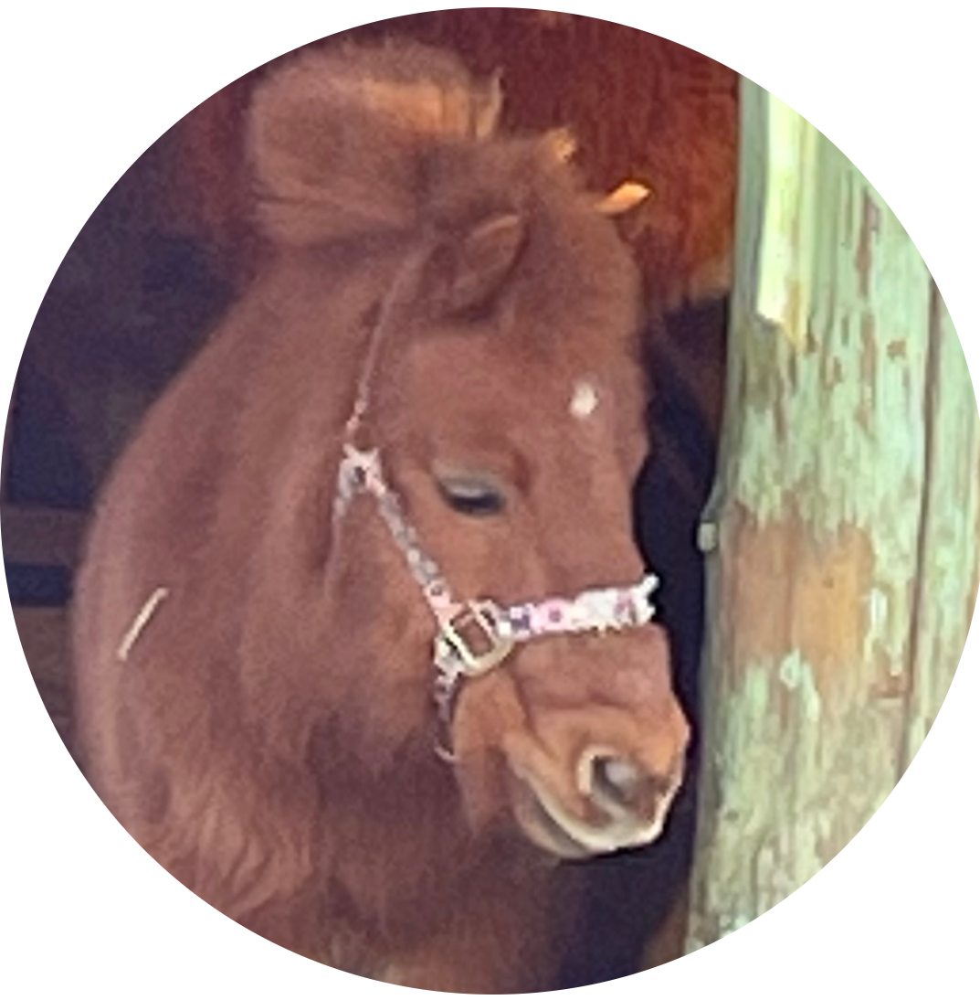
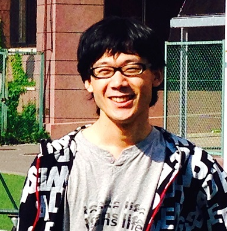
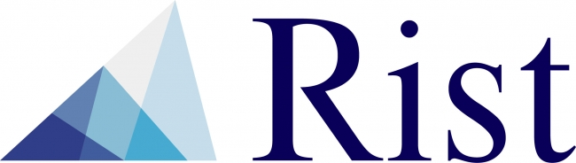
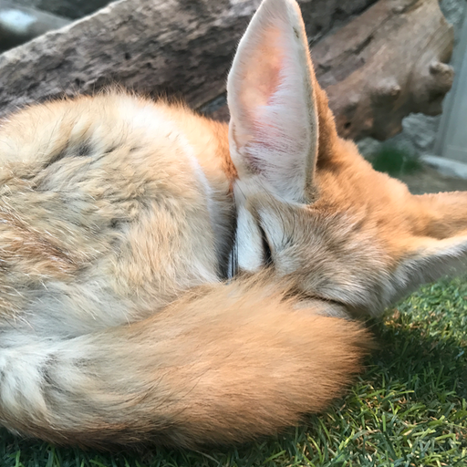
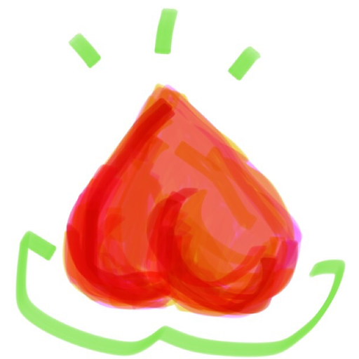
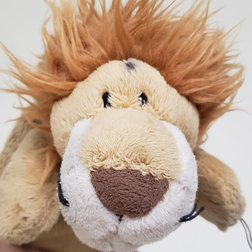
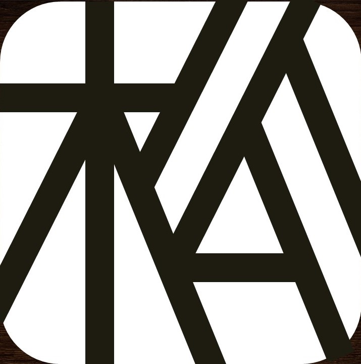

会長
岡本 和優
京都大学 工学部 理工化学科
大学では化学を専攻しています。マテリアルズ・インフォマティクスなど、機械学習の応用に関心があり、Kaggleにも取り組んでいます。 KaiRAでは、AI・機械学習を楽しく学べる環境づくりを大切にしています。
About
Activities
活動の中心は、AI・機械学習に関する本の輪読会と作業会です。 個人的に読みたい本があれば、サークル内で仲間を募って集まった人たちで勉強会を開くこともできます。
その他、論文読み会をしたり、個人やチームでモデル・ソフトを開発したり、kaggleやSIGNATEなどの機械学習コンペティションでチーム参加したりしています。
会費は原則無料で、書籍や計算リソース代※1の補助も行っています。
AI・機械学習に関する本を、担当者が発表し、質問しあうという形式で輪読を行います。
各々が持ってきたテーマごとに仲間を募り、短期集中で開発する会です。
論文のテーマを決め、担当者がそれに関する様々な論文を調べて発表し、質問しあうという形式で輪読を行います。
November Festival
KaiRAでは毎年ポスター展示やAIデモ展示、会誌販売という形で出展を行っています。
上記メニューのNF特設ページから会誌やデモが見れるので、ぜひご覧ください！

Members
会長
京都大学 工学部 理工化学科
大学では化学を専攻しています。マテリアルズ・インフォマティクスなど、機械学習の応用に関心があり、Kaggleにも取り組んでいます。 KaiRAでは、AI・機械学習を楽しく学べる環境づくりを大切にしています。

副会長
京都大学 理学部 数理科学系
大学に入ってからKaiRAで機械学習の勉強を始め、今はKaggleなどもやっています。

会計
京都大学 総合人間学部 数理・情報科学専攻
AIの理論と応用の両面に興味を持って学んでいます。特に認知科学への応用に関心があります。
広報
京都大学 工学部 情報学科 数理工学コース
生成AIを用いた社会実装など、AIの応用に興味があります。また、現在はロボット開発にも興味があります。
Advisors
京都大学 大学院情報学研究科 知能情報学専攻 教授
コンピュータを用いたデータ解析技術の研究と開発を行っている研究者です。 「機械学習」と呼ばれるコンピュータ科学、人工知能の一分野を専門としています。 特にグラフやネットワーク構造をもったデータにおける、予測モデリングを得意としています。 近ごろはクラウドソーシングやヒューマンコンピュテーションによる人間と機械の協調問題解決に取り組んでいます。

京都大学医学研究科 医学研究科附属医療DX教育研究センター 准教授
京都大学医学研究科 大学院医学研究科人間健康科学系専攻バイオメディカルデータサイエンス分野
人工知能・機械学習技術の実問題への展開、特に時系列データ処理に関する研究に取り組んでいます。世の中の多くのデータは潜在的に時系列の情報を含んでいますが、問題に固有の背景知識・ノイズなどの要因により、未だ確立された技術が存在しないのが現状です。 実問題を通してそういった問題を解決するための技術の開発に取り組んでいます。
Sponsors
KaiRAは以下の企業様にご支援を頂いています。

いくつかの勉強会やイベントに参加させて頂いています。
合同でイベントを開催したりしています。
Message
近年はテレビ番組などのメディアで「人工知能」という言葉が多く登場するようになりました。 人工知能というとSF映画のように自我を持ったプログラムが勝手に物事を考えて動き出すイメージがあるかもしれませんが、実際は「膨大な数のデータから法則を見つけ出し、有益な情報を得るプログラム」のイメージの方が正確です。 このような仕組みは機械学習と呼ばれる分野で昔から研究されていますが、近年では高性能なコンピュータの力を借りたディープラーニング（深層学習）と呼ばれる分野が注目されてきました。
これらの分野に興味のある大学生は多いのですが、いざ本格的な本を開いてみると複雑な数式に心を折られて本棚に戻してしまう人が多いのではないでしょうか。 そこで、同じ志をもつ学生が一緒に勉強できる場所を作ろうと思い立ち上げたのが京都大学人工知能研究会 KaiRA です。 KaiRAは理系文系・専攻・回生・大学を問わず様々なバックグラウンドの学生が一丸となって活動しています。
KaiRAの活動は本の輪読が中心で、これは課題図書の各章を担当者が分かりやすく発表することで理解を深めるというものです。 これに加えて、勉強した知識を活かしてアプリケーションの開発も行っています。 会長の私自身まだまだ勉強途中の未熟者ですが、皆で一緒に勉強できればいいなと思います。
Past presidents

京都大学 農学部（2017年度～2018年度）
農学部で画像認識に関する研究をしています。 以前よりコンピュータ・サイエンスや機械学習、深層学習に興味を持ち、独学で勉強してきました。 Microsoft Developmentを始めとする数々のIT企業で機械学習に関するインターンやアルバイトを重ね、日々修行しております。 2017年に、同じ分野に興味のある学生と勉強をすべくKaiRAを設立しました。

京都大学 情報学科 数理工学コース（2019年度～2020年度）
情報学科の数理工学コースで勉強しています。１回生の頃からゼミで深層学習関連の論文を読んでいるので、理論面に強みがあります。

京都大学 工学部 電気電子工学科（2021年度～2022年度）
現在はGANを始めとする画像生成モデルに興味を持っています。

京都大学 理学部 地球物理学教室 物理気候学研究室（2023年度～2024年度）
理学部で深層学習を用いた気象分野のアルゴリズム開発に関する研究を行っています。 松尾研発スタートアップ「Deeepcraft」の創業メンバーで、 AI開発・プロジェクトマネージャーを担当しています。 また株式会社AVILENでE資格講座等の教材・問題作成やAI開発の経験もし、日々鍛錬しています。 AIを"知っている"だけではなく、AIを"つくれる"学生たちをKaiRAから増やしていきたいと思っています。